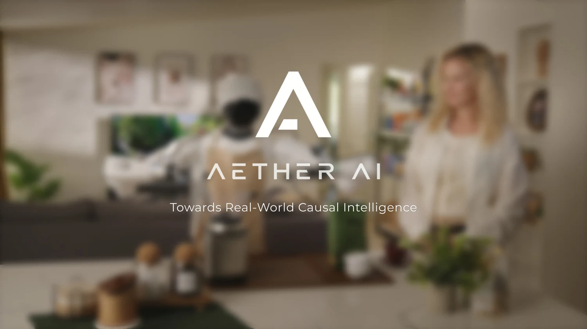

01 / SYSTEMS Real objects. Changing context.CRIS-0 · AETHER AICRIS-0
A Causal Robotic Intelligence System
A causal agent and world model working together for long-horizon robot autonomy. I owned the agent-side planner, executor, unified tool interface, and execution policies, integrating the Causal World Action Model policy on AgiBot G1.
Causal task state · Skill orchestration · Recovery
My contribution
Built explicit causal task states and verifiable stage transitions for retry, rollback, and replanning. Constructed stages, verification criteria, and tools from a small set of demonstrations, coordinating rule-based motion, learned policies, navigation, and verifiers. The public demonstrations include long-horizon tidying, tablecloth replacement, and skill transfer to new objects.